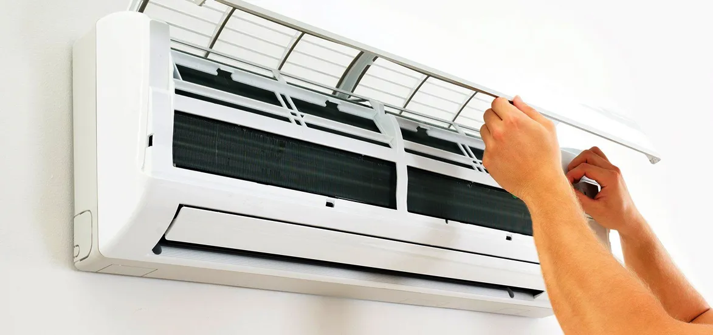

How To Make Your AC Work Efficiently

The advent calendars are already hitting the supermarket, and the daylights are in full swing, indicating that summer days are not too far. But as the summer sun beats this time, have you got any special plans to keep your home, your comfort place cool without elevating your budget? Well, you know that I am talking about your home's air conditioning installation.
Air conditioners help you to have a soothing cool atmosphere at your home all year round, especially during the months of hot summer. But at the same time, you should know that it accounts for almost 12% of your home energy expenditure per month, and it can go up to 70% in the summer days. Whether you have air conditioning in your whole house or a single room, you might have observed that it contributes the biggest energy use in your house.
Everyone loves to have cooling air at home on summer days, but what's not so welcomed is the sudden increase in the power bills. These power bills can increase to more extent if your AC doesn't work efficiently. Thus for reducing the energy consumption and cost of AC, you need to improve the efficiency of the AC unit. Though this is not an easy task, working on ways to increase the efficiency of the AC can help you to cut down the cost of energy consumption. Thus you get the most from your AC units.
So, for you, we have brought some ways that you can get the best out of your AC by increasing its efficiency. Before moving on to the tips first, let's understand how your AC works and what are the signs that your AC system is less efficient.
Understand How Your AC Works
The central conditioner comprises two basic parts: the outdoor unit and the indoor unit. The outdoor unit is the compressor or condenser that is on the side of the AC inside your home. The indoor unit is the evaporator that sits near the central duct in the furnace. If your AC has a heat pump instead of a furnace, then the indoor unit of your AC will be in the air handler. This is the basic structure of the AC.
However, there are signs that your AC is not working efficiently. Let’s peep into it.
Increase In Cost
The most obvious sign indicating that your AC is not efficient is its increased cost. The increasing cost here implies an increase in usage. When the AC is not in good condition, it doesn't cool in a better way, as it used to at the time of air conditioning installation in Los Angeles. Thus the usage increases, and also the energy consumption increases. This ultimately increases the cost.
Increasing Cycling
The brain behind your split conditioner installation is the thermostat. Sometimes due to certain reasons such as not proper cleaning, you can notice the frequent on and off of your thermostat. The dust and everyday usage may cause this condition of the thermostat. This indicates that the thermostat in your AC needs to be replaced as soon as possible. Another specific reason for the improper working of the thermostat might be its compressor. The professionals can determine the issue behind the compressor that's causing frequent cycling of the thermostat.
Ice On The Compressor
Another important reason indicating an urgent AC repair and maintenance in Los Angeles is the settling of ice on the compressor. Due to the leak of the coolant line or the damage to the coils. Another possible reason might also be the dirty filter of AC. These all Amy cause settling on ice on the compressor. If you notice ice on your compressor you can be sure that your AC isn't working like it should, and it is not at all giving its best.
Unusual Sounds
Each appliance in your home may be a refrigerator or a washing machine that has some sort of unique sound. The same goes with AC, it has its specific sound. After using such appliances for years you are quite aware of what sound they produce. If you notice a certain change in the sound that you hear from AC then you should immediately shut the AC down and don't operate until you get it checked from the top air conditioning service in Los Angeles.
Now, as you are acquainted with the signs of improper working of AC. Let's move towards the ways by which you can get your AC work efficiently.
1) Try to keep low temperatures around the thermostat sensor
One of the most significant reasons that affect the efficiency of the AC as beloved by professionals is the temperature around the thermostat of your AC. You need to ensure that the temperature around the thermostat stays low so that the efficiency of AC increases. Reducing ambient heat reduces the energy consumption, and thus, the efficiency of the AC increases.
So how can you do that? Follow the simple steps below to minimize the ambient heat.
- During the daytime, when the sunlight directly falls on your building, keep window coverings closed at that time.
- You have to reduce overall heat production and so you should also have proper vents in the kitchen and bathrooms to disperse heat.
- Turn off the computers and AC when they are not in use.
- If you have any source of light, tube light, or bulb in the area where you have installed a central air conditioner, keep it off to reduce excessive heating of AC.
- Prefer using electrical appliances during the times when the temperature outside is low.
2) Vacuum And Clean Your Vents And Filters
Most people owning an AC in their homes believe that the vent and filter of their AC and condition of vents covered in the home are only responsible for the fresh air indoors. But actually, the AC filters affect the whole working of the AC. If the AC filters are filled with dust, it requires more energy to pump in cool air. Thus it becomes important to clean filters. Firstly, you need to do certain evaluations such as:
- Does your vent look dirty with dust, pet hair, and other debris?
- Do you remember the last time you vacuumed the vents at your home?
- What size of filters are needed for the vents if you don't already have them.
After analyzing this, now get ready with your vacuum to clean the vents. First, dust your vents, and if required, use the vacuums to remove all the dust from the vents. This is essential for maintaining steady airflow through your air conditioning system. Remove all the dust, toys, or any other debris. If necessary, you can have an HVAC expert change your filter regularly and keep the internal pathway of air in the rooms unobstructed.
3) Select Smart Thermostat Settings
Along with changing the environment around your thermostat, you can also consider changing the settings of the thermostat to enhance the functionality of the air conditioner. Check and change the settings to the standard settings recommended by the US Department of Energy -
- The temperature should be set to 78°F when you aren't in the house or all the rooms aren't in use.
- Comfortable temperature ranges during the hot summer days are 7-10 °F. This margin can help you save up to 80%.
- Turn on the AC at normal temperatures and after that decrease the temperature. This is the way to use your AC normally instead of cracking it up.
The bureau of energy also suggests investing in an extra programmable thermostat to retain the standards set by them. With a programmable thermostat, you can follow the standards even when you forget to adjust the temperature throughout the day.
4) Servicing Regularly After Your AC Installation
You can take various efforts to increase the efficiency of the AC, but you can't deny that the professional air conditioning maintenance in Los Angeles can enhance the performance of your AC up to 10 times more. It is recommended to get the servicing done for your air conditioning system at least once a year. Ideally, you should get it done before the summer months where its usage will increase 3 folds. Different steps that a professional AC repair contractor might take are as follows:
- Cleaning of the drain lines
- They will look for what all parts need to be repaired or changed to increase its efficiency.
- Professionals will improve the insulation around your ductwork.
- Repairing the patching fluid leaks that reduce the central air conditioning ability to cool air quickly.
- Replacing the components that had worn out.
Among all these steps mentioned above, this is the most essential step if you have noticed any issue in the last summer. However, this might reduce the performance of the air conditioning. Thus you should get all the issues resolved. Get it all resolved before the cost of the repair becomes very high, and the worst that could happen is that you might be required to face some of the days without AC in your home on warm summer days.
5) Get a proper ventilation system at your home
To add more impact in reducing ambient heat, you can calculate your home properly. During the day, when you are using the air conditioner, let your fans be switched on to circulate air throughout the home, especially where you spend the maximum time of day. The best that you can do for airflow is to leave the doors of the rooms open if you have a central air conditioning at your home.
If you reside in an area where the atmosphere is quite pleasant during the night times in summer, you can keep the windows open to allow fresh air to enter the rooms. This would generate a good breeze flow throughout the home.
6) Adjusting the landscape around the outdoor unit
Now you might be wondering what role would landscape play in the performance of AC? This is simple to understand; the more there is dust near the outdoor unit, the more energy it will require to work. So, undertake the steps given below to keep the landscape as required.
- Clean all the twigs, leaves, dust, and any other debris around the unit as frequently as it is possible.
- If you notice any plant coming within a few inches of the unit's surface, simply trim it off.
- Consider planting dense trees nearby in a way to provide shade to the outdoor unit to keep it cool.
Wrapping up
So, in this article, we have explained all the ways, which will help you to have a cool head with a full wallet over the summer days. Just follow these steps as much as you can, and you can take the help of professionals for Air conditioning maintenance service in Los Angeles if required to get your AC work efficiently. If they suggest the new AC installation in Los Angeles, you can get it done before the summer so that you do not need to face the warm days of summer without the air conditioner.